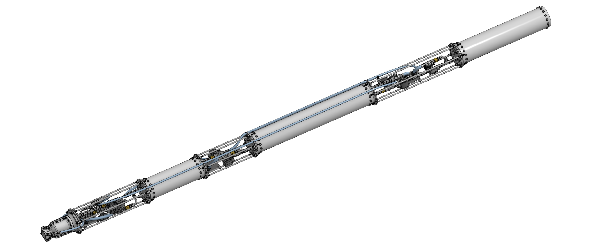
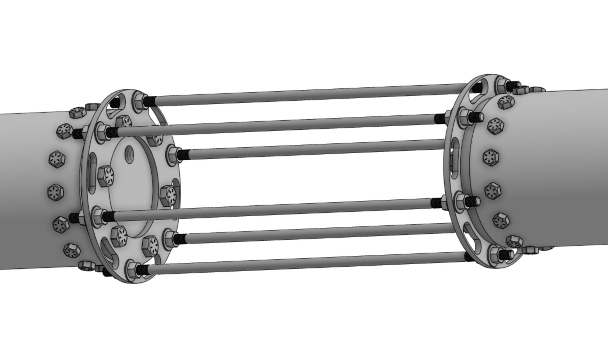
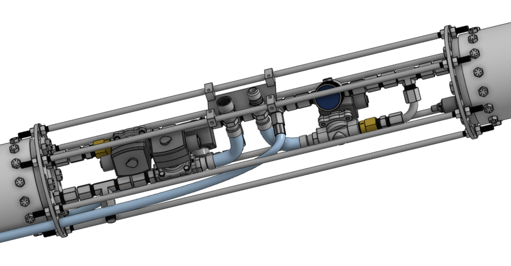
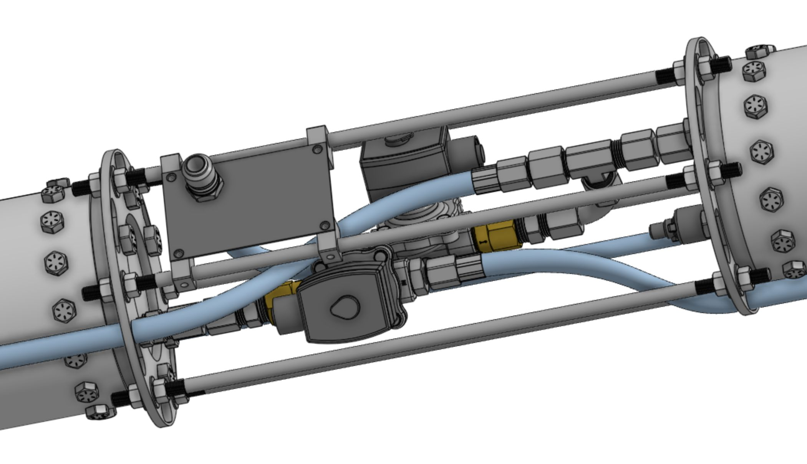
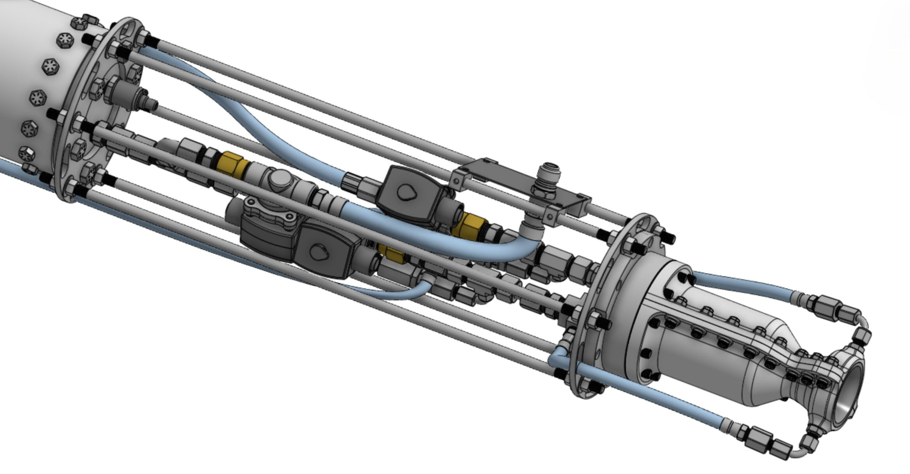

ENO FLIGHT STACK
FLIGHT-READY PROPULSION SYSTEM FOR BIPROPELLANT LIQUID ROCKET ENGINE
To support efforts leading up to static fire of Duke AERO's first-ever liquid rocket engine, ENO, I deisgned a complete propulsion system flight stack for a future vehicle that will fly with this engine. This is the second iteration of a flight stack for ENO; V1 was designed by Arthur Gwozdz in 2023-2024. V2 is the first flight-ready version, complete with a full-fledged thrust structure and plumbing system.
The propulsion stack alone stands a little over 13' tall and fits in a 7.5" diameter airframe. The full structure weighs 131 lb, giving a dry TWR of around 4.3 with the designed thrust level of 2500N. Future efforts will focus on further reducing structural mass for a more flight-viable design.
Key Features

Thrust Structure
The thrust structure consists of the combustion chamber, 3 tanks, and inter-tank struts. The engine thrust is transferred through the walls of the tanks and the steel struts connecting the tanks. On each end of the tanks there is a 1/4" steel plate to serve as attachment points for the struts and guides for the propellant lines.
Pressurant Plumbing
The pressurant plumbing system is situated in the pressurant and oxidizer inter-tank structure, and consists of a pressure regulator and multiple solenoid and check valves needed for pressurant filling and flow regulation. A quick-disconnect panel serves as the filling point for the pressurant tank. Other supporting and safety features such as tank boiloff venting and tank pressure transducers are also included in this system. All plumbing components are COTS from McMaster-Carr.


Oxidizer Plumbing
The oxidizer plumbing system sits between the oxidizer and fuel tanks, and also consists of multiple solenoid and check valves for oxidizer filling and flow regulation. A quick-disconnect panel serves as the filling point for the oxidizer tank. Compression fittings and steel hardline tubings are used between components to allow free swivelling to fit components into this tight space.
Fuel Plumbing
The fuel plumbing system distributes fuel and oxidizer to the combustion chamber and contains the primary fuel and oxidizer valves. The purge line runs from the pressurant tank and connects to a tee fitting here to purge both the fuel and oxidizer lines in the case of an abort. All hardline tubings are either straight or contains one 90 degree bend only, for ease of assembly. A tee fitting is used to split the primary fuel lines into two; and two soft hoses (in blue) feed directly into the cooling jacket of the chamber.
